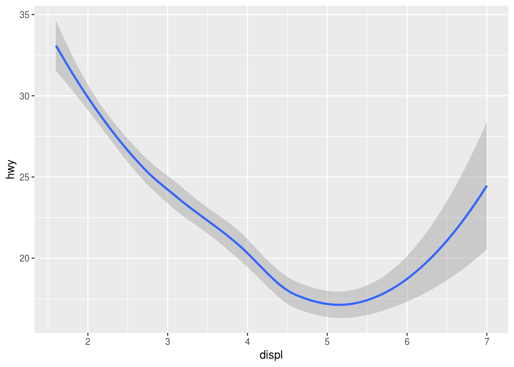
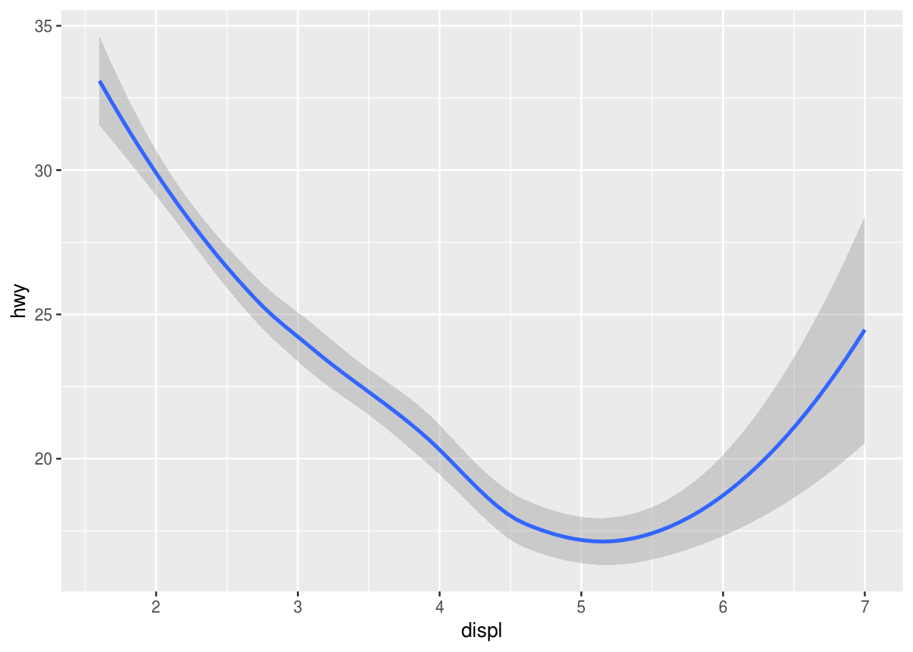
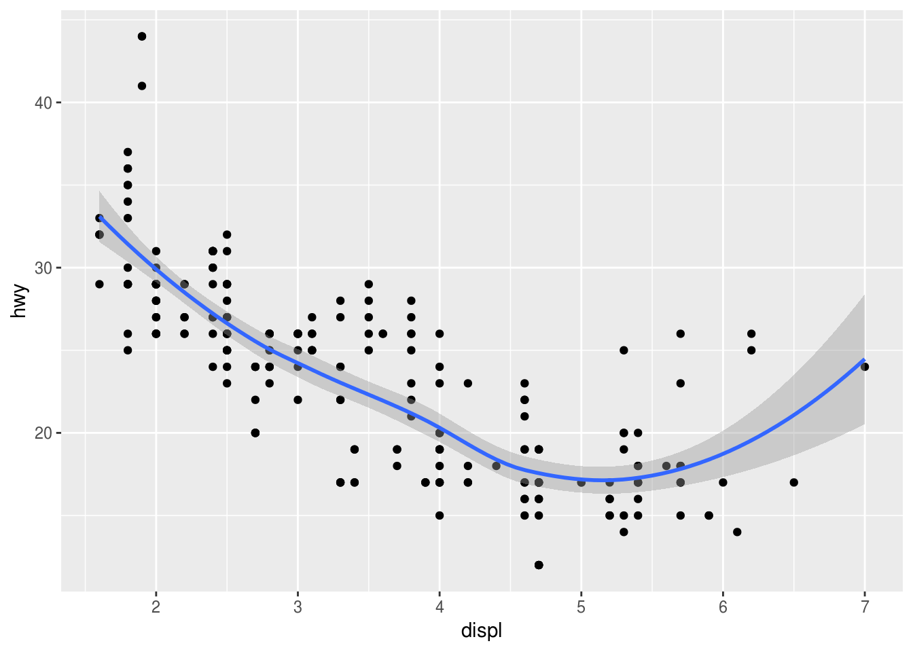
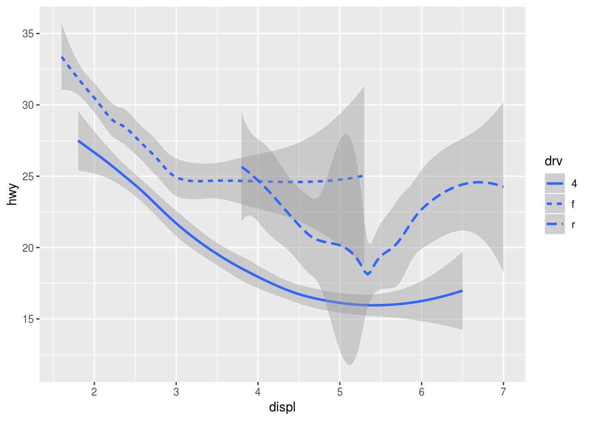
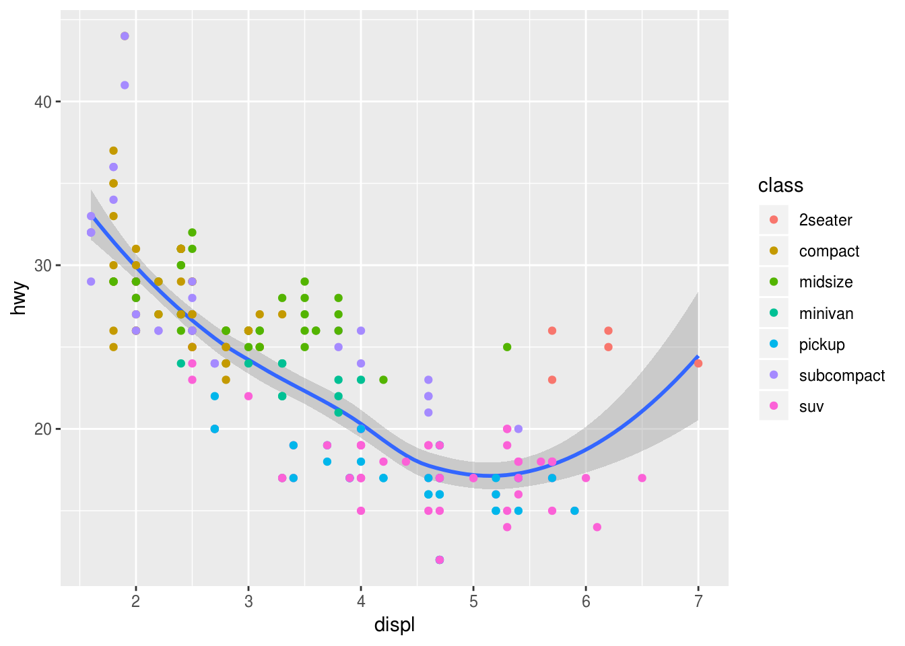
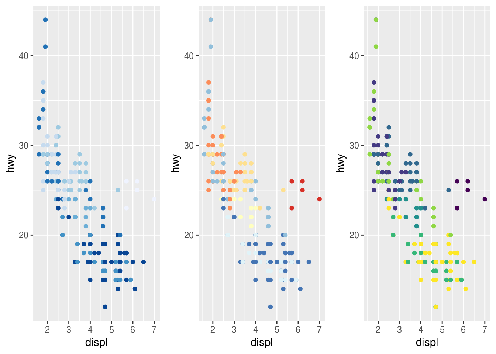

Capítulo 3 Visualización de Datos
Para hacer el tutorial ingresen este código en la consola:
download.file(“git.io/informe-visualizacion.Rmd”, destfile = “informe-visualizacion.Rmd”)
A continuación abran el archivo informacion-visualizacion.Rmd y completen el infome mientras leen el capítulo.
3.1 Introducción
Una de las formas más útiles de visualizar la información es mediante gráficos (aunque si son pocos datos es preferible una tabla). De hecho, el primer paso antes de analizar los datos debe ser hacer un gráfico de los valores que tienen. Un gráfico de dispersión si es bidimensional o un histograma si solo tiene una dimensión.
Aunque hay varios sistemas gráficos (base, lattice, ggobi, plotly)
vamos a usar ggplot2 por su facilidad de uso y potencia para hacer gráficos
complejos a partir de componentes simples.
Este paquete sigue una idea que se llama gramática de gráficos propuesta por Wilkinson en donde los gráficos pueden dividirse en cuatro partes:
- Los datos y como se mapea (
aes) esos datos a las diferentes atributos estéticos. Es decir que columna corresponde al eje x, al eje y, forma, color, etc. - Las formas geométricas (
geom) que representan como se ven los datos. Como puntos, líneas, barras de error, etc. - Transformaciones estadísticas de los datos (
stats) resumen los datos de forma útil. Por ejemplo, para agregar la media por grupo o una línea de regresión sin haberlos calculado antes. - Escalas a las que se mapean los datos (
scale). Estas pueden ser escalas de color, forma, etc. - Un sistema de coordenadas (
coord), que describe como se proyectan estos datos. Por defecto se usa el sistema cartesiano. Pero hay otros disponibles como el polar. - Un sistema paneles (
facet) que describe como dividir los datos en distintos paneles.
Adicionalmente a la gramática, se agrega un sistema de temas que permite modificar la totalidad de elementos que hacen al gráfico como fuentes, líneas de ejes, etc.
3.2 El conjunto de datos mpg
En los datos que vienen con el paquete ggplot2 está mpg. Contiene los
datos de rendimiento, cilindrada y otros más de algunos modelos de autos.
Los datos están una estructura rectangular llamada data frame, cada columna
es una variable y cada fila una observación recolectadas por la Agencia de
Protección ambiental de EE.UU.
## # A tibble: 234 x 11
## manufacturer model displ year cyl trans drv cty hwy fl
## <chr> <chr> <dbl> <int> <int> <chr> <chr> <int> <int> <chr>
## 1 audi a4 1.80 1999 4 auto(l… f 18 29 p
## 2 audi a4 1.80 1999 4 manual… f 21 29 p
## 3 audi a4 2.00 2008 4 manual… f 20 31 p
## 4 audi a4 2.00 2008 4 auto(a… f 21 30 p
## 5 audi a4 2.80 1999 6 auto(l… f 16 26 p
## 6 audi a4 2.80 1999 6 manual… f 18 26 p
## 7 audi a4 3.10 2008 6 auto(a… f 18 27 p
## 8 audi a4 quat… 1.80 1999 4 manual… 4 18 26 p
## 9 audi a4 quat… 1.80 1999 4 auto(l… 4 16 25 p
## 10 audi a4 quat… 2.00 2008 4 manual… 4 20 28 p
## # ... with 224 more rows, and 1 more variable: class <chr>3.3 Gráficos con ggplot
Podemos hacer un gráfico de la siguiente forma:

Prueben escribiendo el código en la consola.
En el gráfico vemos que hay una tendencia a disminuir el rendimiento a medida que aumenta la cilindrada.
En la llamada de Hay distintas partes. La llamada a ggplot donde especificamos
el nombre de los datos que vamos a usar. Es la que inicializa el gráfico.
Pero aquí no especifica nada de como graficarlo. Sin embargo, es necesario empezar siempre por esta función y luego ir agregando capas.
Luego agregamos una capa de puntos. Ambos están unidos por un +. Cada vez
que deseemos agregar una capa, lo haremos con ese símbolo +.
Por otro lado, especificamos el mapeo de las columnas de los datos a las ordenadas
y abscisas dentro del argumento mapping. Hemos graficado el tamaño del motor (en litros),
displ en las ordenadas y el rendimiento en millas por galón en las abscisas.
Siempre que quereamos mapear una columna a alguna parte del gráfico lo hemos de
hacer dentro la función aes(), de aestetics que significa ésteticas en inglés.
Ejercicio 3.1 a. Prueben correr ggplot(data = mpg). ¿Qué ven?
¿Cuantas columnas y filas hay en
mpg?Hagan un gráfico de dispersión entre
ctyvshwyHagan un gráfico de dispersión entre
classyfl. ¿Qué ven? ¿Porqué el gráfico no es útil?
3.4 Mapeando
En el gráfico anterior vemos que hay unos puntos que no siguen la tendencia general. Aquí están resaltados con rojo.

Para saber más el porque de estos puntos podríamos agregar más información al gráfico como por ejemplo el tipo de auto. Una opción es agregar colores.
Ahora podemos ver, que en general los autos con cilindrada grande son camionetas (pickup) o suv. Y que los que tienen cilindrada grande pero rendimiento mayor son autos deportivos.
Agregamos el color mapeando class a la éstetica de color. ggplot le asigna
automáticamente un color a cada nivel de class. Y también genera la leyenda
apropiada.
También podemos mapear el tamaño del punto a class. En este caso recibiremos
un warning porque no tiene mucho sentido mapear el tamaño con una variable
discreta desordenada. Es decir, que no hay una correspondencia entre el tamaño
del punto y la clase.
## Warning: Using size for a discrete variable is not advised.También podriamos mapear la clase a la transparencia de los puntos (alpha) o
a la forma (shape)
# Izquierda
ggplot(data = mpg) +
geom_point(mapping = aes(x = displ, y = hwy, alpha = class))
# Derecha
ggplot(data = mpg) +
geom_point(mapping = aes(x = displ, y = hwy, shape = class))Si reproducen el código en sus computadoras verán que que ambos dan advertencias. Así como no tienen mucho sentido mapear el tamaño a algo sin orden intríseco, tampoco lo tiene mapear la transparencia. Por otro lado, noten que en el gráfico de la derecha ¡faltan los puntos de suv! Esto es porque ggplot solo asigna automaticamente hasta 6 símbolos diferentes para los puntos. Si queremos más hay que hacerlo de forma manual.
En general, uno mapea una variable a alguna característica del gráfico
asociandola dentro de aes(). ggplot se encarga de los detalles de pasar esa
asociación a las distintas capas, de generar los niveles apropiados y de hacer
la leyenda. De hecho, podemos ver que x e y también son características del
gráfico pero en vez de mostrar una leyenda genera las marcas en los ejes.
También es posible configurar alguna estética a un valor específico. Como por ejemplo hacer que todos los puntos sean rojos

Acá el color no muestra ninguna información extra. También es posible cambiar el:
- el color por el nombre que tenga sentido o en hexadecimal.
- el tamaño de los puntos en mm.
- la forma del punto según los valores que se muestran acá abajo

Figura 3.1: Valores númericos y la forma asociada a cada uno. En R hay 25 formas diferentes. Algunas parecen repetirse pero no es así. Por ejemplo, las formas 0, 15 y 22 son todos cuadrados. Pero las formas del 0-15 tienen el color definido por el borde, usan color para cambiar el color. Del 15 a 18 son formas rellenas que usan fill para cambiar el color del relleno. Y de la forma 21 a 23 son formas con relleno y borde que usan ambas fill y color.
Valores númericos y la forma asociada a cada uno. En R hay 25 formas diferentes.
Algunas parecen repetirse pero no es así. Por ejemplo, las formas 0, 15 y 22 son
todos cuadrados. Pero las formas del 0-15 tienen el color definido por el borde,
usan color para cambiar el color. Del 15 a 18 son formas rellenas que usan
fill para cambiar el color del relleno. Y de la forma 21 a 23 son formas con
relleno y borde que usan ambas fill y color.
Ejercicio 3.2 a. ¿Qué está mal con el siguiente código? ¿Porqué no son azules los puntos? Corrijanlo
`ggplot(data = mpg) +
geom_point(mapping = aes(x = displ, y = hwy, color = "blue"))`¿Cuáles son las variables categóricas en
mpg? ¿Cuáles son las variables continuas? ¿Cómo puedes ver esta información cuando corresmpg?
Pista: escribe?mpgpara leer la documentación del conjunto de datos. Ompgpara ver los datosMapeen una variable continua a
color,sizeyshape. ¿Cuál es la diferencia en su acción entre variables categóricos y continuas?¿Qué pasa si mapean la misma variable a varias estéticas?
Pista: Por ejemplo class a color y forma de punto.
¿Qué hace la estética
stroke? ¿Con qué formas funciona?Pista: usen
?geom_pointy busquen el ejemplo dentro de la ayuda.¿Qué sucede cuando mapean una estética a algo que no sea un nombre de variable como
aes(colour = displ < 5)?
3.5 Formas geometricas
¿En que se parecen los gráficos de abajo?
 

Ambos tienen las mismas variables, pero están representados por distintas formas.
En el idioma de ggplot cada forma es un geom. Y cada geom es una forma
geométrica de representar los datos. Hay muchos geom (más de 30 en el
paquete y muchos más en extensiones) y todos empiezan con geom_), por
ejemplo:
| Gráfico | geom |
|---|---|
| Barras | geom_col geom_bar |
| Puntos | geom_point |
| Cajas y Barras | geom_boxplot |
| Histograma | geom_histogram |
| Lineas | geom_line |
| Barras de Error | geom_errorbar |
Pueden ver más en la ayuda de ggplot en R (usando la pestaña de ayuda o
usando help(nombre_de_función) en la consola) o en la documentación online
que tiene la ventaja de tener graficados los ejemplos http://ggplot2.tidyverse.org/reference/ .
Para hacer los gráficos de arriba usamos:
# Izquierda
ggplot(data = mpg) +
geom_point(mapping = aes(x = displ, y = hwy))
# Derecha
ggplot(data = mpg) +
geom_smooth(mapping = aes(x = displ, y = hwy))Todos los geoms van luego de ggplot y se unen con un +. En ggplot cada forma geométrica es una capa y pueden combinarse varias en un mismo gráfico.

Además, todos los geoms tienen un argumento mapping para la estética. Claro
que no todos aceptan los mismas argumentos. No tienen sentido ponerle relleno
a una línea o cambiar el tipo de línea a un punto. Pero si se puede cambiar el
tipo de línea de `geom_smooth:

Acá geom_smooth separa tres líneas según el valor de drv, que es la tracción.
Una línea lisa para las que son 4x4 (4), rayas cortas para tracción delantera (f)
y rayas largas para tracción trasera (r).
Podemos ver más claramente porque tiene esta forma geom_smooth graficando los puntos de cada grupo:

Figura 3.2: Varios geoms pueden usarse en un mismo gráfico.
Muchos geoms que resumen la información de varios datos con una sola forma
tienen un argumento de éstetica llamado group que agrupa la observaciones que
son iguales en una variable.
ggplot(data = mpg) +
geom_smooth(mapping = aes(x = displ, y = hwy))
ggplot(data = mpg) +
geom_smooth(mapping = aes(x = displ, y = hwy, group = drv))
ggplot(data = mpg) +
geom_smooth(
mapping = aes(x = displ, y = hwy, color = drv),
show.legend = FALSE
)
Arriba vimos que podiamos usar dos geoms en un mismo
gráfico (y podríamos agregar más si quisieramos). Pero al hacerlo hemos duplicado
el mapping en los dos geoms:
ggplot(data = mpg) +
geom_smooth(mapping = aes(x = displ, y = hwy, linetype = drv, color = drv)) +
geom_point(mapping = aes(x = displ, y = hwy, color = drv))Podemos evitarlo si ponemos el mapping dentro de la llamada de ggplot:
ggplot(data = mpg, mapping= aes(x = displ, y = hwy, linetype = drv, color = drv)) +
geom_smooth() +
geom_point()Esto funciona porque las capas heredan
el mapping de ggplot. Por eso, va a funcionar en todas las capas que pongamos,
de forma global.
A veces, esto introduce ciertos errores cuando usamos varias fuentes de datos y
las variables no están en presentes en todos los conjuntos. Es posible cambiar
el mapping de una capa específica y va a ser utilizada solo en esa capa; es
decir, de forma de forma local.
ggplot(data = mpg, mapping= aes(x = displ, y = hwy)) +
geom_smooth() +
geom_point(mapping = aes(color = class))
O también podemos definir otro conjunto de datos para el geom:
ggplot(data = mpg, mapping = aes(x = displ, y = hwy)) +
geom_point(mapping = aes(color = class)) +
geom_smooth(data = filter(mpg, class == "subcompact"), se = FALSE)
Todavía no vieron filter, pero ya lo verán más adelante.
Ejercicio 3.3 a. ¿Cuál geom usarias para dibujar un gráfico de líneas? ¿Un boxplot? ¿Un histograma? ¿Un gráfico de áreas?
Corre este código mentalmente y predice cómo se verá el gráfico. Luego, ejecuta el código y comprueba lo que pensaste.
ggplot(data = mpg, mapping = aes(x = displ, y = hwy, color = drv)) + geom_point() + geom_smooth(se = FALSE)¿Qué crees que hace
show.legend = FALSE? ¿Qué sucede si lo quitas? ¿Por qué crees que lo usé antes en el capítulo?ggplot(data = mpg) + geom_smooth( mapping = aes(x = displ, y = hwy, color = drv), show.legend = FALSE )¿Qué hace el argumento
sedegeom_smooth()?ggplot(data = mpg, mapping = aes(x = displ, y = hwy, color = drv)) + geom_point() + geom_smooth(se = TRUE)¿Serán diferentes estos dos gráficos? ¿Por qué sí o no?
ggplot(data = mpg, mapping = aes(x = displ, y = hwy)) + geom_point() + geom_smooth() ggplot() + geom_point(data = mpg, mapping = aes(x = displ, y = hwy)) + geom_smooth(data = mpg, mapping = aes(x = displ, y = hwy))
3.6 Transformaciones Estadísticas
Pensemos en los gráficos de barras. En ggplot2 se hacen con geom_bar. A
primera vista los gráficos de barras parecen simples. En este caso estamos
graficando datos de diamantes, del conjunto de datos diamonds que contiene
cerca 54000 datos. En el gráfico vemos que hay muchos más diamantes de cortes
buenos que regulares.

En el eje x está puesto el corte, y en el eje y está puesto la cuenta (frecuencia) de cada uno. Pero si vemos el conjunto de datos veremos que esta última ¡no está! Entonces ¿De dónde salió? Algunos geoms grafican los datos puros pero otros aplican transformaciones estadísticas a los datos y crean nuevas variables:
- Los gráficos de barras, histograms y polígonos de frecuencia cuentan y juntan los datos.
geom_smoothusa modelos para mostrar las tendencias de los datos.geom_boxplotcrea un sumario de estadísticos robustos para mostrar los datos.
El algoritmo usado para calcular las nuevas variables se llama stat. Abajo
vemos como funciona stat_count
Empieza con los datos
## # A tibble: 6 x 10
## carat cut color clarity depth table price x y z
## <dbl> <ord> <ord> <ord> <dbl> <dbl> <int> <dbl> <dbl> <dbl>
## 1 0.230 Ideal E SI2 61.5 55. 326 3.95 3.98 2.43
## 2 0.210 Premium E SI1 59.8 61. 326 3.89 3.84 2.31
## 3 0.230 Good E VS1 56.9 65. 327 4.05 4.07 2.31
## 4 0.290 Premium I VS2 62.4 58. 334 4.20 4.23 2.63
## 5 0.310 Good J SI2 63.3 58. 335 4.34 4.35 2.75
## 6 0.240 Very Good J VVS2 62.8 57. 336 3.94 3.96 2.48geom_bar calcula las nuevas variables usando el stat count que devuelve
un nuevo data.frame
## # A tibble: 5 x 3
## cut count prop
## <ord> <int> <dbl>
## 1 Fair 1610 1.
## 2 Good 4906 1.
## 3 Very Good 12082 1.
## 4 Premium 13791 1.
## 5 Ideal 21551 1.geom_bar luego usa esos datos para graficar:

Podés saber que stat usa cada geom usando la ayuda. Por ejemplo, ?geom_bar
usa por defecto stat_count y stat_count usa por defecto geom_bar para
mostrar sus resultados y ambos están descriptos en la misma página de ayuda.
Podemos ver que es calculado en la sección Computed Variables.
Es posible intercambiar geom por su stat. Por ejemplo:

Esto funciona porque cada stat tiene un geom por defecto y cada geom tiene un stat. Lo que significa que podes usar cada geom sin preocuparte por las transformaciones subyacentes.
Hay veces que querrás cambiar los valores por defecto:
- Cuando tengas las variables precomputadas y desees graficarlas. En el
código de abajo cambio el stat de
geom_barporstat_identity(identidad). Esto me permite graficar la altura de la variable y a algún valor del conjunto de datos.
demo <- tribble(
~cut, ~freq,
"Fair", 1610,
"Good", 4906,
"Very Good", 12082,
"Premium", 13791,
"Ideal", 21551
)
ggplot(data = demo) +
geom_bar(mapping = aes(x = cut, y = freq), stat = "identity")
No te preocupes si no entiendes que hace tribble o <-. Todavía no lo hemos
visto pero quizá puedas entender que hacen por su contexto
- Muchos stats computan varias variables y quizás quieras mostrar otra. Abajo, en lugar de graficar la frecuencia o cuenta, grafico la proporción o frecuencia relativa.

- Quizás quieras llamar la atención sobre ciertos medidas de resumen que has
calculado. Puedes hacer esto con
stat_summary.
ggplot(data = diamonds) +
stat_summary(
mapping = aes(x = cut, y = depth),
fun.y = median,
fun.ymax = max,
fun.ymin = min
)Ejercicio 3.4 a. ¿Cuál es el geom asociado por defecto a stat_summary? ¿Cómo podrías
reescribir el gráfico anterior para usar la función geom en vez la función stat?
ggplot(data = diamonds) + stat_summary( mapping = aes(x = cut, y = depth), fun.y = median, fun.ymax = max, fun.ymin = min )
¿Qué hace
geom_col? ¿En que se diferencia degeom_bar?La mayoría de los geoms y stats vienen en pares que casi siempre son usados juntos. Lee la documentación y haz una lista de todos los pares. ¿Qué tienen en común?
¿Qué variables computa
stat_smooth()¿Qué parámetros controlan su comportamiento?En el gráfico de proprociones, necesitamos poner
group = 1. ¿Por qué? En otras palabras ¿Por qué los siguientes gráficos tienen problemas?
ggplot(data = diamonds) + geom_bar(mapping = aes(x = cut, y = ..prop..)) ggplot(data = diamonds) + geom_bar(mapping = aes(x = cut, fill = color, y = ..prop..))
3.7 Ajuste de Posiciones
El gráfico anterior revela algo interesante de los gráficos de barras. Tienen relleno (fill) y tienen color.

Es más claro trabajar con el relleno porque es más visible
en el gráfico. Pero vemos que las distintas barras están apiladas, lo que
dificulta la comparación. Se debe a que la posición de barras es apilada
(stack) por defecto. Podemos cambiarla modificando el argumento position
de geom_bar(). Entre las otras posiciones que podemos elegir están identidad
(identity), esquivar (dodge) y relleno (fill) .
- Identidad hace que las barras (o otro geoms) caigan unas encimas de otras. No es muy útil porque las barras se superponen y hace muy difícil la interpretación. Se puede mejorar agregando transparencia y usando color y no relleno, pero es complicado de interpetar si la barras se superponen o están apiladas.

- Esquivar es quizás la más útil junto con relleno. Hace que las barras estén una al lado de la otra. Lo que hace que sea sencillo comparar la altura de estas.

- Recién vimos que que con esquivar podemos poner las barras una al lado de otra.
Pero, más allá de comparar la cantidad de diamantes en cada uno, ya que la
cantidad es muy diferente en cada corte resulta más útil comparar las
proporciones de cada una de las claridades. Relleno funciona de forma
similar al apilado, pero estadariza cada columna a longitud uno. Entonces se
ve las proporciones o frecuencias relativas de cada uno de los niveles de
clarity.

Hay otros ajustes de posiciones que no son útiles para los gráficos de barras
pero son muy útiles para los gráficos de puntos. En el gráfico de dispersión
entre displ y hwy hay menos puntos que el total
31 vs 234. Muchos
puntos se superponen, por eso vemos menos. Podemos evitarlo añadiendo un poco
de movimiento aleatorio a cada punto.

Si bien el gráfico no va a ser exacto, muestra más información que en el caso donde se superponen los puntos.
Podes obtener más información el ayuda de cada uno: ?position_dodge,
?position_identity, ?position_fill, ?position_stack, ?position_jitter
Ejercicio 3.5 a. ¿Cómo podrías mejorar el siguiente gráfico?
ggplot(data = mpg) + geom_point(mapping = aes(x = hwy, y = cty))
¿Cómo se controla el grado de separación en
position_dodge?¿Cómo se podría controlar el grado de ruido en
position_jitter?
3.8 Sistemas de Coordenadas
Hasta ahora estuvimos graficando en un sistema de coordenadas cartesianas. Pero es posible cambiarlo, por ejemplo intercambiando el eje x e y.
ggplot(data = mpg, mapping = aes(x = class, y = hwy)) +
geom_boxplot()
ggplot(data = mpg, mapping = aes(x = class, y = hwy)) +
geom_boxplot() +
coord_flip()
En el primer caso las etiquetas del eje x se superponen, pero en el segundo es fácil verlas. No es la única forma de solucionar este problema. También es posible cambiar el ángulo de las etiquetas para que no se superpongan.
Otras veces es mejor reemplazar las coordenadas cartesianas por coordenadas geográficas.
arg <- map_data("world", region = "Argentina")
ggplot(data = arg, mapping = aes(x = long, y = lat, group = group)) +
geom_polygon(fill = "white", color = "black")
ggplot(data = arg, mapping = aes(x = long, y = lat, group = group)) +
geom_polygon(fill = "white", color = "black")
coord_quickmap()
Esto evita que el mapa se deforme, ya que los grados de longitud no miden lo
mismo en todas las latitudes. Si van a hacer muchos mapas les recomiendo que
vean la extesión ggmap que tiene muchas utilidades para hacer mejores mapas.
También existen la coordenadas polares. Un gráfico de torta, que les recomiendo que no lo usen por los problemas de percepción que tiene, es un gráfico de barras apiladas en coordernadas polares.
cxc <- ggplot(mtcars, aes(x = factor(cyl))) +
geom_bar(width = 1, colour = "black")
cxc + coord_polar()Ejercicio 3.6 a. Inviertan los ejes de un gráfico de barras.
ggplot(data = diamonds) + geom_bar(mapping = aes(x = cut, fill = clarity), position = "dodge")
- ¿Cuál es la diferencia entre
coord_quickmap()ycoord_map()
a.¿Para qué sirve la función labs()?
3.9 Personalizando el gráfico
Hay varias maneras de personalizar los gráficos. Por un lado, las estéticas
pueden ser personalizadas cambiando las distintas scales (escalas). Para
cambiar el eje x se usa scale_x_* donde * es el tipo de dato que tiene el
eje: si es númerico se usa continuous y si es categórico se usa discrete.
Se pueden cambiar muchas cosas: el título del eje (name), el lugar de las
marcas (breaks), las etiquetas de las marcas (labels), y muchas más opciones.
ggplot(data = mpg) +
geom_point(mapping = aes(x = displ, y = hwy))+
scale_x_continuous(name = "Cilindrada (l)", breaks = 1:7,
labels = c("uno", "dos", "tres", "cuatro", "cinco",
"seis", "siete"))
Un atajo para modificar los nombres de los ejes es usar la función labs(),
pero solo se pueden modificar los nombres de los ejes y nada más.
ggplot(data = mpg) +
geom_point(mapping = aes(x = displ, y = hwy))+
labs(x = "Cilindrada (l)", y = "Millas por galón en Autopista")
También se puede modificar los colores que se asignan.
ggplot(data = mpg) +
geom_point(mapping = aes(x = displ, y = hwy, colour = class))+
scale_color_brewer("Clase")
ggplot(data = mpg) +
geom_point(mapping = aes(x = displ, y = hwy, colour = class))+
scale_color_brewer("Clase", palette = "RdYlBu")
ggplot(data = mpg) +
geom_point(mapping = aes(x = displ, y = hwy, colour = class))+
scale_color_viridis_d("Clase")
Hay muchas más opciones disponibles, ya que como dice el dicho: “Para gustos, los colores”. Si quieren conocerlas te recomiendo que lean la ayuda de cada una o visiten el sitio de ggplot2.
Vemos que hay patrón común con las escalas, todas empiezan por scale, luego
sigue por lo que se quiere modificar: el eje, x o y; el color, color;
relleno, fill; la forma, shape; el tipo de línea linetype, etc. Cada uno
de las estéticas tiene su escale. Luego, salvo alguna excepción, siguen por el
tipo de dato o en el caso de los colores por el método de creación del color.
Vale la pena agregar que cada escale tiene su versión manual para un control
total de la apariencia.
Por otro lado están los elementos del gráfico que modifican la apariencia
general del gráfico. El tipo y tamaño de letra, el color del fondo, el grosor
de la líneas de los ejes, la dirección de marcas, la dirección del texto, y
¡todo lo demás!. Todo esto está unido a lo que es el tema (theme) del gráfico.
Se pueden guardar las modificaciones para usarla facilmente y ya vienen algunas
opciones en ggplot y hay más en el paquete ggthemes y otros.
ggplot(data = mpg) +
geom_point(mapping = aes(x = displ, y = hwy, colour = class)) +
theme_classic()
Para modificar algún elemento en particular usamos la función theme() al final
del gráfico. Dentro de la llamada a theme modificamos el argumento que queremos
cambiar usando la función element_*().
ggplot(data = mpg) +
geom_bar(mapping = aes(x = class, fill = fl)) +
theme(axis.text.x = element_text(angle = 45, hjust = 1, vjust = 1))
Sí, es bastante complicado. Pero por suerte se puede guardar y reutilizar.
x_45 <- theme(axis.text.x = element_text(angle = 45, hjust = 1, vjust = 1))
ggplot(data = mpg) +
geom_bar(mapping = aes(x = class, fill = fl)) +
x_45
También es posible cambiar la posición de la leyenda o eliminarla completamente.
ggplot(data = mpg) +
geom_bar(mapping = aes(x = class, fill = fl)) +
theme(legend.position = "bottom")
ggplot(data = mpg) +
geom_bar(mapping = aes(x = class, fill = fl)) +
theme(legend.position = "none")
Ejercicio 3.7 a. ¿Qué sucede si modificas algún elemento particular del gráfico con theme()
y luego aplicas un tema en particular como theme_dark()
- Pon la leyenda arriba.
ggplot(data = mpg) + geom_bar(mapping = aes(x = class, fill = fl)) + theme(legend.position = "")
- Cambia el tipo de forma a puntos abiertos
ggplot(data = mpg) + geom_point(mapping = aes(x = displ, y = hwy, colour = class)) + scale_ #completar